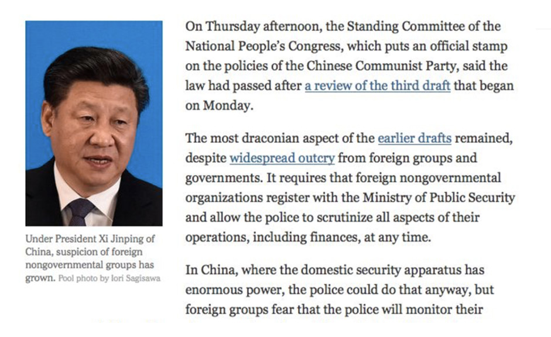
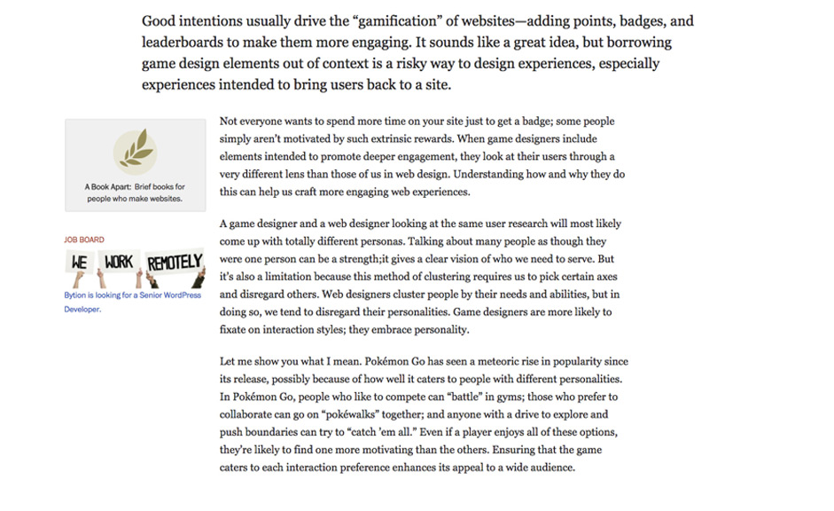
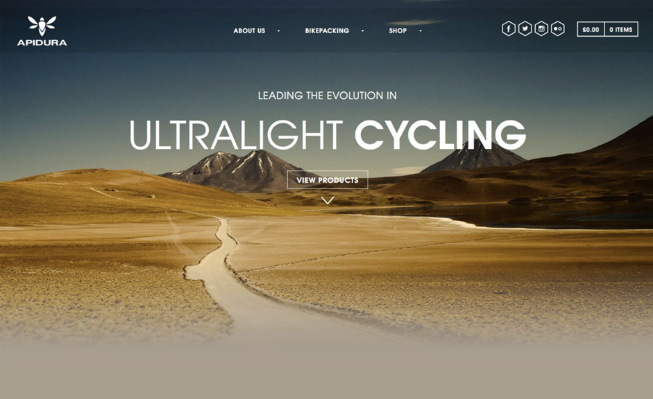
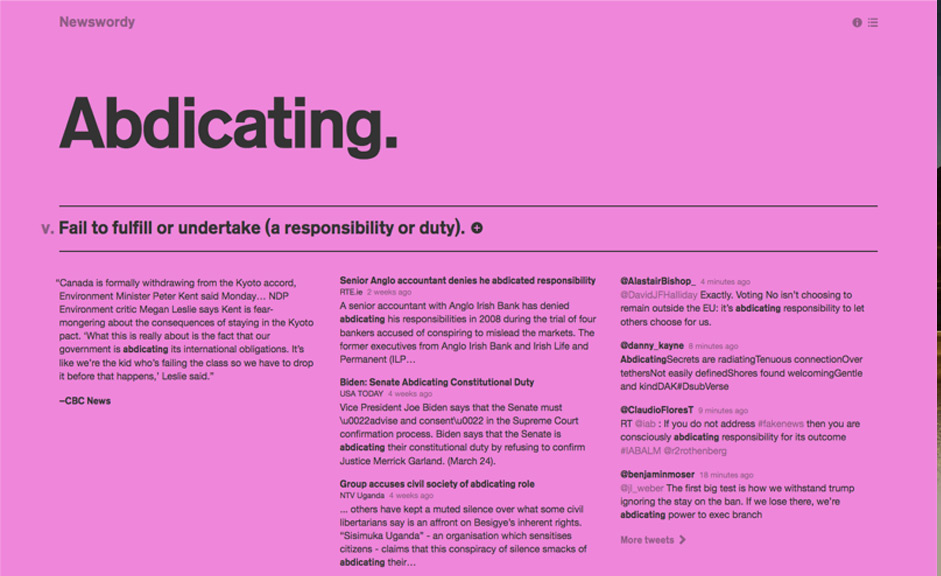
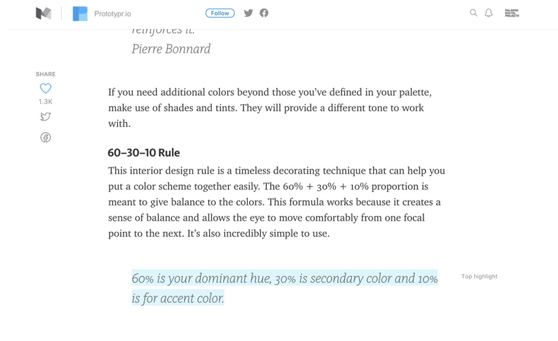
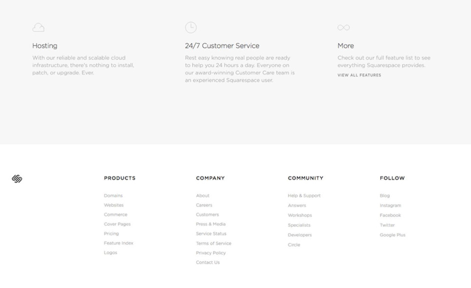

Portada New York Times sin tipografía --> Portada New York Times con tipografía En las webs La importancia de la tipografía por que define al gerarquia visual y la interficie de usbold, regular.
Crear un ritmo vertical a traves de la tipografíabold, regular.html body line eight Shyp.com by Dann Petty via dribbble.com
Gerarquia tipográfica, Esquema gerarquia tipográfica. Gerarquia definida tipográficamente. Portada tipográfica NYT.
"Interficie type",  Portada New York Times sin tipografía -->  Portada New York Times con tipografía  Big type  Big type Texto de interficie  TExto de interficier  Small type
 Portada New York Times sin tipografía -->
Portada New York Times sin tipografía -->
 Portada New York Times con tipografía
Portada New York Times con tipografía